参考链接
syllabus
| Session | Topic | Detailed Topics |
|---|---|---|
| 20 | KAFKA |
1. Kafka - concepts, how it works and how message is sent to partition 2. Consumer Group, assignment strategy 3. Message in Order |
| 21 | KAFKA2 |
1. Kafka Duplicate Message 2. Kafka Message Loss 3. Poison Failure, DLQ 4. Kafka Security (SASL, ACLs, Encrypt etc) |
why MQ
主要有三个作用：
解耦。如图所示。假设有系统B、C、D都需要系统A的数据，于是系统A调用三个方法发送数据到B、C、D。这时，系统D不需要了，那就需要在系统A把相关的代码删掉。假设这时有个新的系统E需要数据，这时系统A又要增加调用系统E的代码。为了降低这种强耦合，就可以使用MQ，系统A只需要把数据发送到MQ，其他系统如果需要数据，则从MQ中获取即可。
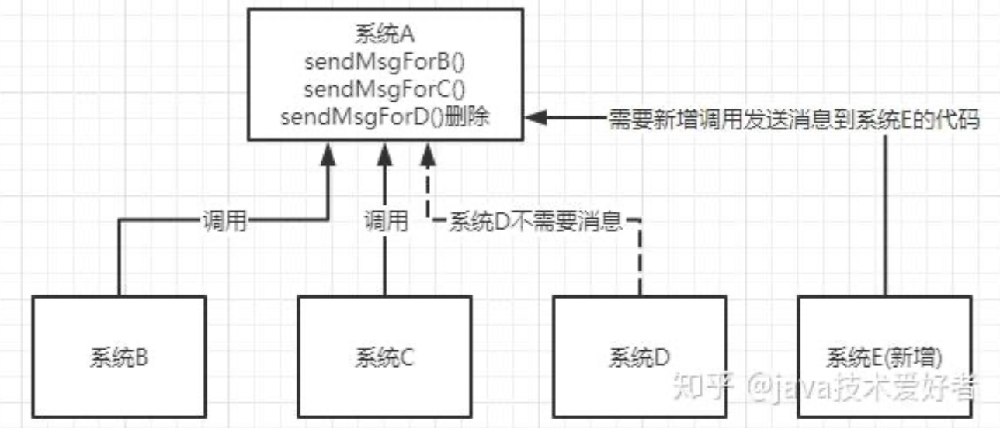
异步。如图所示。一个客户端请求发送进来，系统A会调用系统B、C、D三个系统，同步请求的话，响应时间就是系统A、B、C、D的总和，也就是800ms。如果使用MQ，系统A发送数据到MQ，然后就可以返回响应给客户端，不需要再等待系统B、C、D的响应，可以大大地提高性能。对于一些非必要的业务，比如发送短信，发送邮件等等，就可以采用MQ。
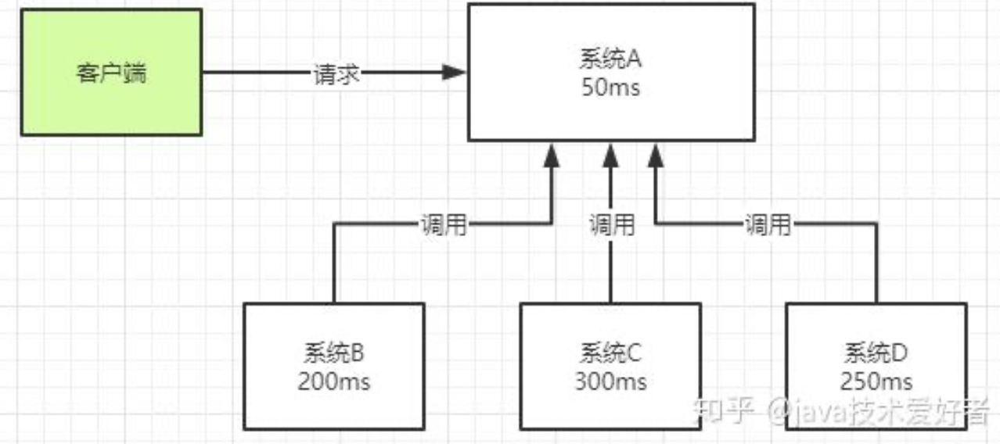
削峰。如图所示。这其实是MQ一个很重要的应用。假设系统A在某一段时间请求数暴增，有5000个请求发送过来，系统A这时就会发送5000条SQL进入MySQL进行执行，MySQL对于如此庞大的请求当然处理不过来，MySQL就会崩溃，导致系统瘫痪。如果使用MQ，系统A不再是直接发送SQL到数据库，而是把数据发送到MQ，MQ短时间积压数据是可以接受的，然后由消费者每次拉取2000条进行处理，防止在请求峰值时期大量的请求直接发送到MySQL导致系统崩溃。
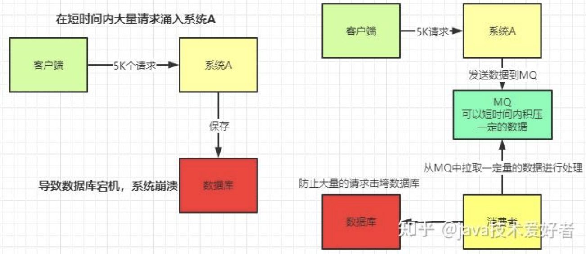
Kafka vs. RabbitMQ
- Kafka中，只有pull:
- Consumer使用pull模式从broker订阅并消费消息，而不是由broker主动推送给consumer。原因主要有以下几点：
- 消费速率控制：push模式很难适应消费速率不同的消费者，因为消息发送速率是由broker决定的，可能会导致Consumer来不及处理消息，出现拒绝服务以及网络拥塞等问题。而pull模式下，Consumer可以根据自身的消费能力以适当的速率消费消息，自主控制消费消息的速率，还能选择不同的提交方式从而实现不同的传输语义。
- 简化broker设计：pull模式可以简化broker的设计，Consumer可自主控制消费方式，如可批量消费也可逐条消费。
- Consumer使用pull模式从broker订阅并消费消息，而不是由broker主动推送给consumer。原因主要有以下几点：
- RabbitMQ既支持broker主动推送消息给consumer的推模式（push），也支持consumer主动从broker拉取消息的拉模式（pull）：
- 推模式(默认)：消费者调用
channel.basicConsume方法订阅队列后，由RabbitMQ主动将消息推送给订阅队列的消费者。推模式是一种高效的消息处理方式，具有较好的实时性，消息到达RabbitMQ后会立即被投递给匹配的消费者，消费者能及时得到最新的消息。不过，该模式下消费者必须设置一个缓冲区来缓存消息，否则缓冲区可能会溢出。 - 拉模式(极少使用)：消费者调用
channel.basicGet方法主动从指定队列中拉取消息。这种模式在消费者需要时才去拉取消息，会增加消息延迟，降低系统吞吐量，实时性也较差，消费者获取新消息的时间取决于其拉取消息的时间。
- 推模式(默认)：消费者调用
| Aspect | Apache Kafka | RabbitMQ |
|---|---|---|
| Type | Distributed log-based streaming platform | Traditional message broker (queue-based) |
| Architecture | Pull-based, partitioned log with persistent storage | Push-based, uses queues and exchanges |
| Message Model | Publish-subscribe (log replay possible) | Queues with consumer ACKs (point-to-point or pub-sub) |
| Throughput | Extremely high (millions/sec), horizontally scalable | Moderate to high, lower than Kafka in most cases |
| Latency | Slightly higher, designed for throughput and durability | Lower latency, good for near-real-time delivery |
| Durability | Designed for long-term storage (e.g., days/months) | Messages typically removed once consumed |
| Ordering | Guaranteed within a partition | Ordering not guaranteed without careful config |
| Persistence | Highly durable, append-only log | Persistent queues, but not optimized for large history |
| Protocol Support | Kafka (native TCP), Kafka Connect, REST Proxy | AMQP 0.9.1 (default), MQTT, STOMP, HTTP, etc. |
| Consumer Model | Consumer groups (each group reads independently) | Messages removed once delivered to a consumer |
| Use Cases | Event sourcing, real-time analytics, stream processing | Task queues, background jobs, short-lived events |
| Operational Cost | More complex (e.g., Zookeeper, tuning partitions) | Easier to set up and manage for simple use cases |
When to Use Kafka:
- High-throughput event pipelines
- Real-time analytics
- Event sourcing / CDC (Change Data Capture)
- Log aggregation across distributed systems
When to Use RabbitMQ:
- Lower latency
- Task queues (e.g., background job processing)
- Complex routing with low volume (e.g., topic or header exchanges)
- When AMQP protocol is a requirement
Verdict:
- Use Kafka for scalable, durable, high-throughput streaming.
- Use RabbitMQ for lower latency, reliable messaging with rich routing logic and simpler delivery guarantees.
Kafka
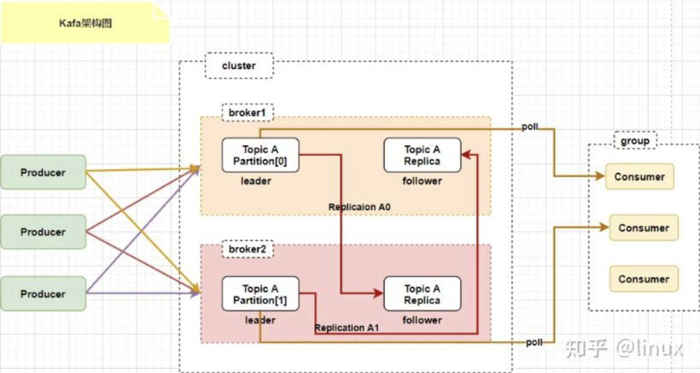
一个topic有多个partition，每个partition又有多个副本，leader副本和follower副本吗?
是的，在 Kafka 这样的分布式消息系统里，一个主题（Topic）可包含多个分区（Partition），而每个分区又能有多个副本（Replica），其中就分为领导者副本（Leader Replica）和追随者副本（Follower Replica），下面详细介绍：
主题（Topic）
主题是 Kafka 中数据组织的逻辑概念，它可被看作是消息的类别或者数据流的名称。生产者把消息发送到主题，消费者则从主题接收消息。例如，在一个电商系统里，可能会有“order_topic”“payment_topic”等不同主题，分别用于处理订单和支付相关的消息。
分区（Partition）
- 定义：主题会被划分为一个或多个分区，分区是物理存储的基本单元。每个分区在物理上对应一个日志文件，消息会按顺序追加到这个日志文件中。
- 作用：分区能提升 Kafka 的并发处理能力。不同的分区可分布在不同的服务器上，生产者和消费者能够并行地对不同分区进行读写操作，从而提高系统的吞吐量。
副本（Replica）
- 定义：为确保数据的可靠性和高可用性，每个分区可以有多个副本。这些副本会被分布到不同的 Broker 节点上。
- 类型
- 领导者副本（Leader Replica）：每个分区都会有一个领导者副本，所有的读写操作都直接与领导者副本进行交互。生产者发送消息时，消息会被写入领导者副本；消费者读取消息时，也是从领导者副本读取。领导者副本负责维护分区内消息的顺序和一致性。
- 追随者副本（Follower Replica）：追随者副本会从领导者副本异步地复制消息，以保持与领导者副本的数据一致。当领导者副本所在的 Broker 节点出现故障时，Kafka 会从追随者副本中选举出一个新的领导者副本，从而保证服务的可用性。
示例说明
假设存在一个名为“user_activity_topic”的主题，它有 3 个分区（Partition 0、Partition 1、Partition 2），每个分区有 2 个副本。那么整体架构如下：
| 分区 | 领导者副本所在 Broker | 追随者副本所在 Broker |
|---|---|---|
| Partition 0 | Broker 1 | Broker 2 |
| Partition 1 | Broker 2 | Broker 3 |
| Partition 2 | Broker 3 | Broker 1 |
在这个示例中，生产者向“user_activity_topic”发送消息时，消息会根据分区策略被分配到不同的分区，并且只会写入该分区的领导者副本。追随者副本会不断地从领导者副本复制消息，以保证数据的一致性。当某个 Broker 节点出现故障时，Kafka 会自动进行领导者选举，确保系统的正常运行。
Kafka同一个消费组对于一个分区是共享同一个offset的是吧
是的，在 Kafka 里，同一个消费组对于一个分区共享同一个 offset。下面从原理、目的和影响等方面详细解释：
原理
- 分区分配机制：Kafka 为了保证消息在分区内的顺序消费和避免重复消费，采用了一个分区只能被一个消费组内的一个消费者消费的策略。这意味着在同一个消费组中，针对特定的一个分区，只会有一个消费者负责处理该分区的消息。既然只有一个消费者处理这个分区，那么该分区对应的消费偏移量（offset）在这个消费组内就是唯一的，也就是共享同一个 offset。
- offset 提交：消费者在消费完消息后，需要向 Kafka 提交 offset，以此告知 Kafka 该消费组已经消费到了分区的哪个位置。在一个消费组里，无论哪个消费者实际消费了分区的消息，最终提交的都是该分区统一的 offset。例如，消费者 A 消费了分区 P0 的部分消息后提交 offset，这个 offset 就代表了整个消费组在分区 P0 的消费进度。
目的
- 保证消息顺序性：确保同一个消费组对分区内的消息按顺序处理。如果每个消费者都有自己独立的 offset，就可能出现多个消费者乱序消费分区消息的情况，破坏了消息在分区内的顺序性。
- 避免重复消费：统一的 offset 能让消费组清楚知道哪些消息已经被消费过。当消费者出现故障重启或者进行分区重平衡后，能从正确的 offset 位置继续消费，避免重复处理已经消费过的消息。
影响
- 故障恢复：若消费组内负责某分区的消费者出现故障，Kafka 会将该分区分配给其他消费者，新的消费者会从共享的 offset 位置继续消费，保证消费的连续性。
- 分区重平衡：当消费组发生分区重平衡时，所有消费者会重新分配分区，每个分区对应的共享 offset 能帮助新接手的消费者准确找到消费起点。
in kafka, how to handle schema evolution
什么是schema
Schema 演进（Schema Evolution） 是指在不破坏已有数据和消费者的前提下，对数据结构进行修改和升级的过程。
为什么需要 Schema 演进？
Kafka 中的数据通常使用 Avro、Protobuf 或 JSON 进行序列化。随着业务发展，数据结构不可避免地要调整，比如：
- • 添加新字段
- • 删除旧字段
- • 修改字段类型或默认值
Schema 演进的目标：让新老版本的 producer 和 consumer 能够兼容地生产和消费数据，避免因结构变更导致系统崩溃或数据出错。
举个例子：
初始 schema：{
"type": "record",
"name": "User",
"fields": [
{ "name": "username", "type": "string" }
]
}
后续演进版本：{
"type": "record",
"name": "User",
"fields": [
{ "name": "username", "type": "string" },
{ "name": "email", "type": "string", "default": "" }
]
}
如果设置了 向后兼容（backward compatibility），旧消费者仍然可以读取新数据，因为新字段有默认值。
总结：
Schema 演进就是在版本升级时，保证数据结构变更的同时不影响已有系统运行。它依赖于明确的兼容性策略，常与 Schema Registry 一起使用，是构建稳定、可维护数据平台的关键手段。
如何处理
在 Kafka 中处理 Schema 演进（Schema Evolution），通常采用 Avro + Schema Registry 的方式。关键在于使用 Confluent 的 Schema Registry 来管理 schema 版本，并确保 producer 和 consumer 对 schema 演进的兼容性。
处理方式如下：
- 使用 Schema Registry
- • Producer 将 schema 注册到 Schema Registry。
- • 消费者从 Schema Registry 获取相应 schema 进行反序列化。
- 设置兼容性策略（Compatibility Modes）, Schema Registry 支持几种兼容策略：
- • BACKWARD：新 schema 能读取旧数据。
- • FORWARD：旧 schema 能读取新数据。
- • FULL：双向兼容。
- • NONE：不检查兼容性。
推荐使用 BACKWARD 或 FULL 以保证消费端平稳升级。
遵循 Avro 的演进规则
支持的兼容性变更包括：
- • 添加字段（带默认值）
- • 删除字段（不再使用）
- • 字段类型兼容变更（如 int → long）
不支持的变更包括：
- • 删除无默认值字段
- • 字段类型不兼容更改（如 string → int）
实际示例：添加字段
旧 Schema：{
"type": "record",
"name": "User",
"fields": [
{"name": "name", "type": "string"}
]
}
新 Schema（添加字段）：{
"type": "record",
"name": "User",
"fields": [
{"name": "name", "type": "string"},
{"name": "age", "type": "int", "default": 0}
]
}
建议：
- • 在 CI/CD 中加上 schema 演进检测。
- • 控制 schema 发布流程，避免非兼容变更。
- • 所有服务统一使用 Schema Registry 中的 schema，不手动写 schema。
如需高可靠性系统，schema 设计时务必考虑未来扩展性和演进策略。
avro是啥和protobuf对比
Avro 是什么？
Avro 是 Apache 出品的一种数据序列化格式，常用于大数据和 Kafka 场景中。它定义数据的 结构（Schema），并将结构和数据一起序列化，便于不同系统之间通信。
Avro 的特点：
- • 紧凑高效：使用二进制编码，占用空间小。
- • 支持 schema 演进：内置支持兼容性检查。
- • 自描述性：每条消息携带 schema ID，可自动解析。
- • 与 Kafka 紧密集成：广泛用于 Kafka 消息序列化。
Avro vs. Protobuf 对比
| 特性 | Avro | Protobuf |
|---|---|---|
| 开发方 | Apache | |
| Schema 定义方式 | JSON Schema | .proto文件（专用语法） |
| 序列化格式 | 二进制 | 二进制 |
| Schema是否携带在数据中 | 可选（通常只携带schema ID） | 否（需外部管理或代码生成） |
| Schema演进支持 | 非常好，支持多种兼容策略 | 有一定支持，但依赖生成代码和兼容性手动管理 |
| 与Kafka兼容性 | 最佳，官方推荐与Schema Registry搭配 | 可以使用，但不如Avro原生支持 |
| 性能 | 高 | 更高（略优于Avro） |
| 可读性 | JSON定义可读性好 | .proto文件较规范但不如JSON易读 |
| 动态Schema支持 | 强，支持无需生成代码的动态解析 | 弱，推荐使用预编译的类 |
结论：
- • 用 Avro：如果你在 Kafka、Hadoop、Flink 等大数据生态中，需要 强 Schema 演进、与 Schema Registry 集成，优先选 Avro。
- • 用 Protobuf：如果你追求极致性能、跨语言 gRPC 通信、或者你在 Google 技术栈内，Protobuf 更适合。
实际工程中，Avro 更适合 Kafka 数据流场景，Protobuf 更适合微服务通信场景。
schema registry是啥？一个第三方进程吗
是的，Schema Registry 是一个独立部署的服务进程，通常由 Confluent 提供（也有其他兼容实现），专门用于 集中管理 Kafka 消息的 Schema，支持版本控制、兼容性验证等功能。
Schema Registry 的作用：
- 管理 Schema 版本：记录每个 topic 的 schema 变更历史。
- 验证兼容性：防止不兼容 schema 上线，保障消费者安全。
- 提供 Schema ID 映射：每条 Kafka 消息只需携带一个 schema ID，反序列化时去 registry 查 schema。
- 支持 Avro / Protobuf / JSON Schema：不是 Avro 专属，但 Avro 最常用。
部署方式：
- • 是一个 独立进程（Java 服务），通常以 REST 接口形式运行。
- • 默认端口是 8081。
- • 可与 Kafka 独立部署，也可集群化部署。
- • 支持 高可用（HA），可以配合多个 Kafka Broker 使用。
Kafka + Avro + Schema Registry 的消息流程图：[Producer]
|
| — Serialize data with Avro + schema ID
|
[V]
[Kafka Broker]
|
| — Consumer receives binary + schema ID
|
[V]
[Consumer]
|
| — Queries Schema Registry via schema ID
| — Deserializes data using schema
V
Final Object
总结：
Schema Registry 是 Kafka 架构中不可或缺的一个中间组件，用于安全、规范、可演进地管理 schema。如果你在用 Kafka 传结构化数据（特别是 Avro），Schema Registry 是强烈推荐配套部署的服务。
What is kafka dead letter queue and how do you handle it
A Kafka dead - letter queue (DLQ) is a special topic in a Kafka cluster that is used to store messages that cannot be successfully processed for some reason. Here’s an overview of what it is and how to handle it:
- Purpose: The main purpose of a DLQ is to prevent messages from being lost when they encounter processing failures. Instead of discarding the messages, they are sent to the DLQ for further analysis and possible re - processing.
- How Messages End Up in the DLQ: Messages can end up in the DLQ due to various reasons, such as application - level errors (e.g., incorrect message format, missing required fields), network issues, or problems with the processing logic. When a consumer fails to process a message after a certain number of retries, the message is typically redirected to the DLQ.
- Monitoring and Analysis:
- Monitor DLQ Size: Regularly check the size of the DLQ to identify any unusual spikes. A growing DLQ may indicate a problem with the message processing pipeline.
- Inspect Messages: Examine the messages in the DLQ to determine the cause of the processing failures. This can involve looking at the message payload, headers, and any error messages associated with the failed processing attempts.
- Error Resolution:
- Fix Application Bugs: If the errors are due to bugs in the consumer application, fix the code and redeploy the application.
- Data Correction: If the messages in the DLQ contain incorrect data, correct the data either manually or through an automated process.
- Message Re - processing:
- Manual Re - processing: For critical or complex messages, you may choose to re - process them manually. This allows for careful inspection and ensures that the processing is done correctly.
- Automated Re - processing: Set up a mechanism to automatically re - process messages from the DLQ. This can be a separate consumer that reads from the DLQ and attempts to process the messages again, perhaps with some additional error - handling logic.
- Configuration and Tuning:
- Retry Policies: Review and adjust the retry policies for your consumers. Determine the appropriate number of retries and the delay between retries based on the nature of your application and the expected failure scenarios.
- DLQ Topic Configuration: Configure the DLQ topic with appropriate settings, such as retention policies and replication factors. Ensure that the DLQ has enough storage to handle the potentially large number of messages.
Handling a Kafka dead - letter queue effectively requires a combination of monitoring, error resolution, message re - processing, and proper configuration to ensure the reliability and integrity of the message processing system.
kafka Exactly one semantics
Kafka 提供三种消息传递语义，分别是最多一次（At most once）、至少一次（At least once）和精确一次（Exactly once），它们的区别如下：
最多一次（At most once）
- 生产者：消息发送后，不管是否成功写入 Kafka 就继续发送下一条消息。如果发送失败，不会重试。比如网络抖动导致消息没发出去，生产者也不会重新发送。
- 消费者：消费消息前先提交偏移量，再处理消息。若处理过程中消费者崩溃，已提交偏移量的消息不会再次处理，可能造成消息丢失。
- 应用场景：适用于对数据丢失容忍度较高，对性能要求较高的场景，如实时日志收集，少量日志丢失不影响整体分析。
至少一次（At least once）
- 生产者：消息发送失败会重试，保证消息至少被写入 Kafka 一次。但如果写入成功，而确认响应丢失，生产者重试会导致消息重复写入。
- 消费者：先处理消息，处理完成后再提交偏移量。若处理完消息还未提交偏移量时消费者崩溃，重启后会重新处理之前的消息，导致消息重复消费。
- 应用场景：适用于对数据丢失零容忍，但能接受数据重复的场景，如数据统计分析，重复数据可以通过去重处理。
精确一次（Exactly once）
- 生产者：有幂等生产者和事务性生产者两种机制。幂等生产者借助 PID 和序列号避免同一分区内重复写入；事务性生产者保证跨分区消息发送的原子性，失败可回滚。
- 消费者：结合生产者事务操作与手动提交偏移量，在事务中处理消息并在完成后提交，故障时事务回滚，确保消息不重复不丢失。
- 应用场景：适用于对数据准确性要求极高的场景，如金融交易系统，每笔交易必须精确处理一次。
Concept
Exactly-once semantics means that each message is written to a Kafka topic and consumed and processed exactly once,
ensuring data consistency.
Challenges
- Producer: Retries may lead to duplicate message writes due to the failure of receiving acknowledgments.
- Consumer: Incorrect timing of offset commits may result in duplicate message processing or message loss.
Solutions
- Producer
- Idempotent Producer: Introduced since Kafka 0.11.0, it avoids duplicate writes by means of the Producer ID (
PID) and sequence numbers. - Transactional Producer: Ensures the atomicity of message sending across multiple partitions, and in case of
failure, the transaction can be rolled back.
- Idempotent Producer: Introduced since Kafka 0.11.0, it avoids duplicate writes by means of the Producer ID (
- Consumer: Combine the producer’s transaction operations with manual offset commits. Process messages within a
transaction and commit the offset after the processing is completed. When a failure occurs, the transaction is rolled
back to ensure there are no message-related issues.
RabbitMQ
RabbitMQ是一款使用Erlang语言开发的，实现AMQP(高级消息队列协议)的开源消息中间件。首先要知道一些RabbitMQ的特点，官网可查：
- 可靠性。支持持久化，传输确认，发布确认等保证了MQ的可靠性。
- 灵活的分发消息策略。这应该是RabbitMQ的一大特点。在消息进入MQ前由Exchange(交换机)进行路由消息。分发消息策略有：简单模式、工作队列模式、发布订阅模式、路由模式、通配符模式。
- 支持集群。多台RabbitMQ服务器可以组成一个集群，形成一个逻辑Broker。
- 多种协议。RabbitMQ支持多种消息队列协议，比如 STOMP、MQTT 等等。
- 支持多种语言客户端。RabbitMQ几乎支持所有常用编程语言，包括 Java、.NET、Ruby 等等。
- 可视化管理界面。RabbitMQ提供了一个易用的用户界面，使得用户可以监控和管理消息 Broker。
- 插件机制。RabbitMQ提供了许多插件，可以通过插件进行扩展，也可以编写自己的插件。
how to use it in springboot
服务端搭建好了之后肯定要用客户端去操作，接下来就用 Java 做一个简单的 HelloWord 演示。
因为我用的是 SpringBoot，所以在生产者这边加入对应的 starter 依赖即可：
<dependency> |
一般需要创建一个公共项目 common，共享一些配置，比如队列主题，交换机名称，路由匹配键名称等等。
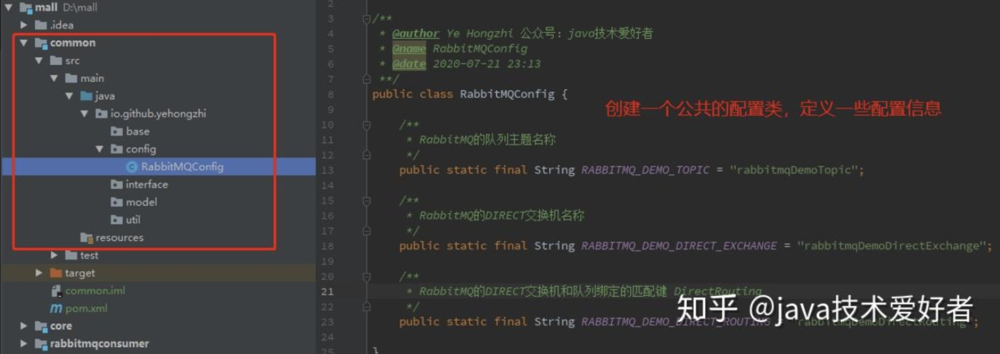
首先在 application.yml 文件加上 RabbitMQ 的配置信息：
spring: |
然后在生产者这边，加上 common 包的 maven 依赖，然后创建一个 Direct 交换机以及队列的配置类：
|
然后再创建一个发送消息的 Service 类：
|
然后根据业务放在需要用的地方，比如定时任务，或者接口。我这里就简单一点使用 Controller 层进行发送：
|
生产者写完之后，就写消费者端的代码，消费者很简单。maven 依赖，yml 文件配置和生产者一样。只需要创建一个类，@RabbitListener 注解写上监听队列的名称，如图所示：
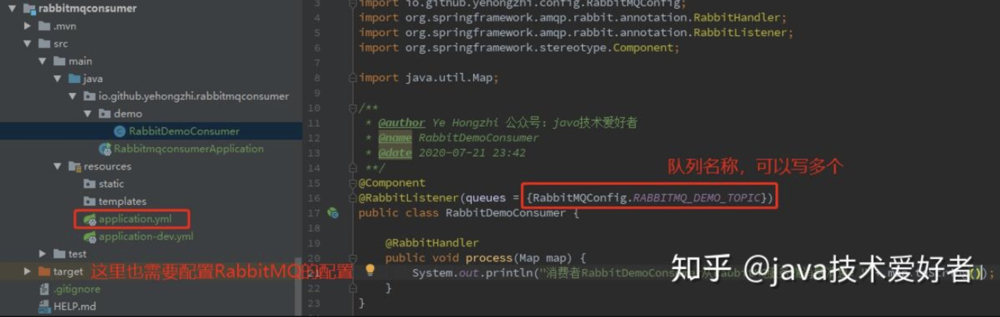
最后再启动消费者，进行消费：
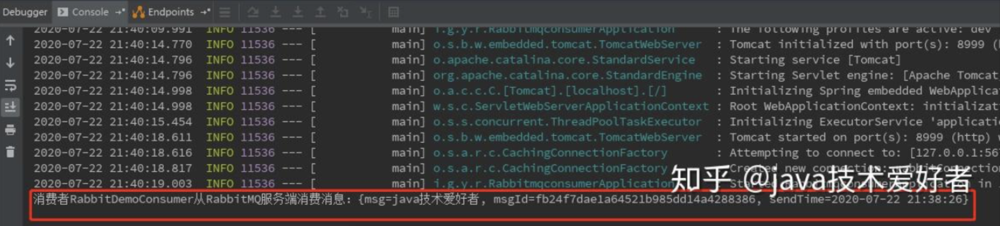
这时候就会持续监听队列的消息，只要生产者发送一条消息到 MQ，消费者就消费一条。我这里尝试发送 4 条：
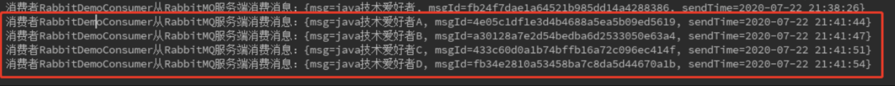
由于队列不存在，启动消费者报错的这个问题。最好的方法是生产者和消费者都尝试创建队列，怎么写呢，有很多方式，我这里用一个相对简单一点的：
生产者的配置类加点东西：
//实现BeanPostProcessor类，使用Bean的生命周期函数 |
这样启动生产者就会自动创建交换机和队列，不用等到发送消息才创建。
消费者需要加一点代码：
|
这样，无论生产者还是消费者先启动都不会出现问题了~
components of RabbitMQ
从上面的 HelloWord 例子中，我们大概也能体验到一些，就是 RabbitMQ 的组成，它是有这几部分：
- Broker：消息队列服务进程。此进程包括两个部分：Exchange 和 Queue。
- Exchange：消息队列交换机。按一定的规则将消息路由转发到某个队列。
- Queue：消息队列，存储消息的队列。
- Producer：消息生产者。生产方客户端将消息同交换机路由发送到队列中。
- Consumer：消息消费者。消费队列中存储的消息。
这些组成部分是如何协同工作的呢，大概的流程如下，请看下图：
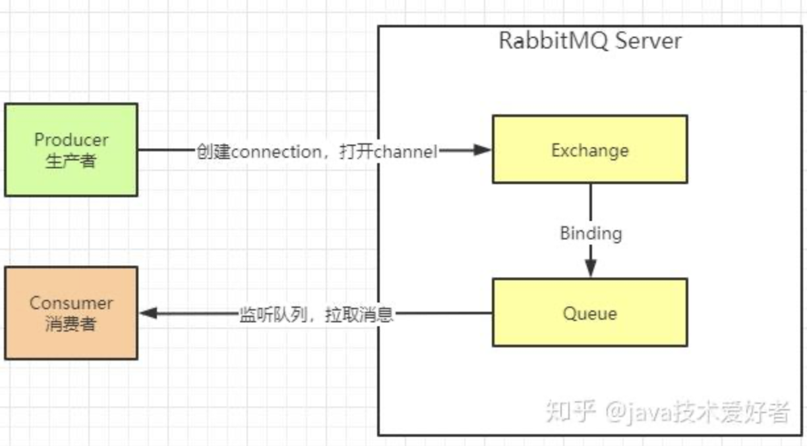
- 消息生产者连接到 RabbitMQ Broker，创建 connection，开启 channel。
- 生产者声明交换机类型、名称、是否持久化等。
- 生产者发送消息，并指定消息是否持久化等属性和 routing key。
- exchange 收到消息之后，根据 routing key 路由到跟当前交换机绑定的相匹配的队列里面。
- 消费者监听接收到消息之后开始业务处理。
different types of Exchange
从上面的工作流程可以看出，实际上有个关键的组件 Exchange，因为消息发送到 RabbitMQ 后首先要经过 Exchange 路由才能找到对应的 Queue。
实际上 Exchange 类型有四种，根据不同的类型工作的方式也有所不同。在 HelloWord 例子中，我们就使用了比较简单的 Direct Exchange，翻译就是直连交换机。其余三种分别是：Fanout exchange、Topic exchange、Headers exchange。
Direct Exchange
见文知意，直连交换机意思是此交换机需要绑定一个队列，要求该消息与一个特定的路由键完全匹配。简单点说就是一对一的，点对点的发送。
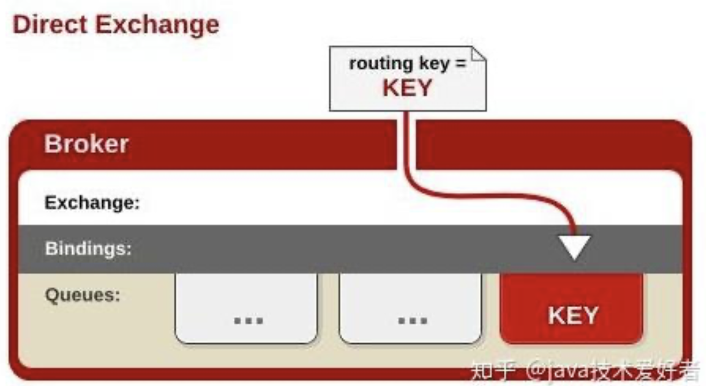
完整的代码就是上面的 HelloWord 的例子，不再重复代码。
Fanout exchange
这种类型的交换机需要将队列绑定到交换机上。一个发送到交换机的消息都会被转发到与该交换机绑定的所有队列上。很像子网广播，每台子网内的主机都获得了一份复制的消息。简单点说就是发布订阅。
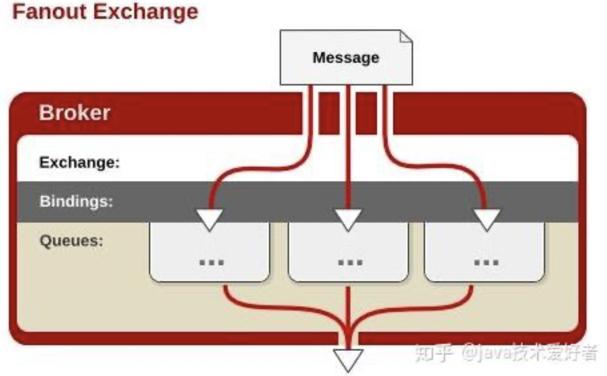
Topic Exchange
直接翻译的话叫做主题交换机，如果从用法上面翻译可能叫通配符交换机会更加贴切。这种交换机是使用通配符去匹配，路由到对应的队列。通配符有两种："*" 、 "#"。需要注意的是通配符前面必须要加上 "." 符号。
*符号：有且只匹配一个词。比如a.*可以匹配到 “a.b”、”a.c”，但是匹配不了 “a.b.c”。#符号：匹配一个或多个词。比如 “rabbit.#” 既可以匹配到 “rabbit.a.b”、”rabbit.a”，也可以匹配到 “rabbit.a.b.c”。
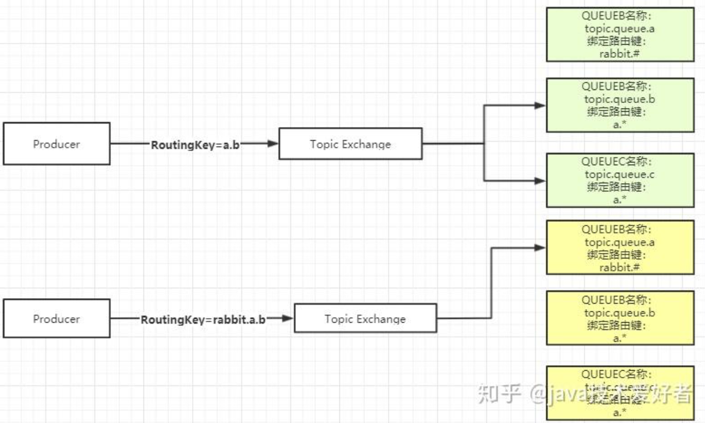
Headers Exchange
这种交换机用的相对没这么多。它跟上面三种有点区别，它的路由不是用 routingKey 进行路由匹配，而是在匹配请求头中所带的键值进行路由。如图所示：
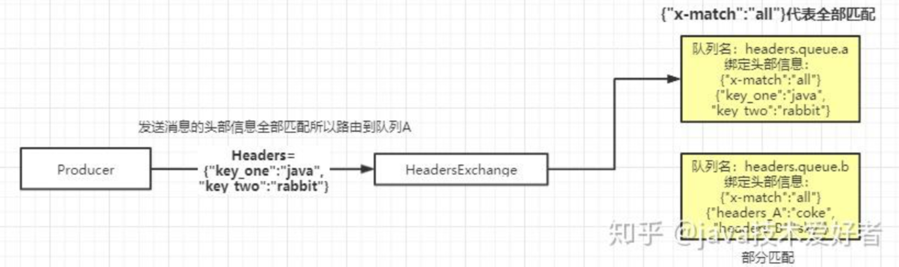
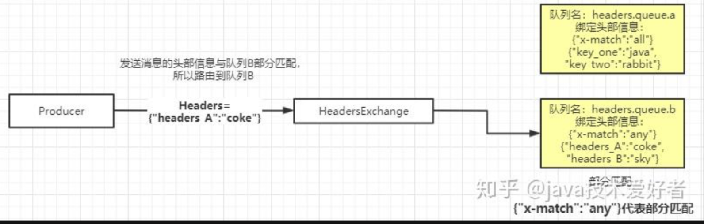
创建队列需要设置绑定的头部信息，有两种模式：全部匹配和部分匹配。如上图所示，交换机会根据生产者发送过来的头部信息携带的键值去匹配队列绑定的键值，路由到对应的队列。